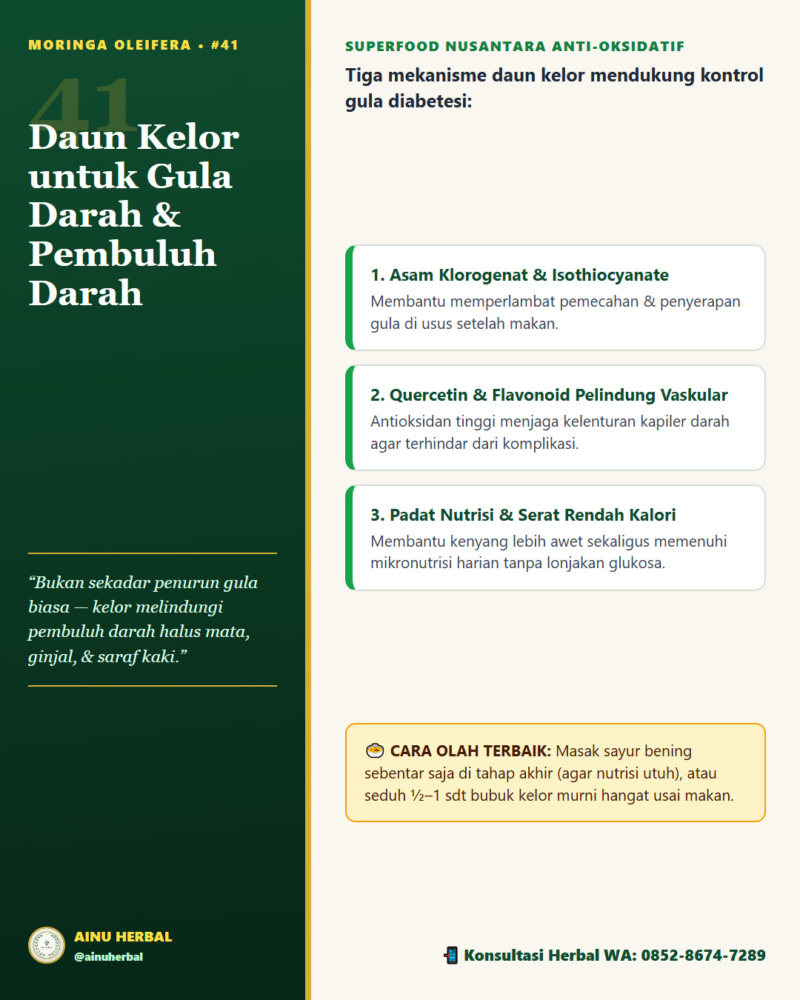

Daun Kelor (Moringa) untuk Gula Darah & Antioksidan Pelindung Pembuluh Darah

Daun Kelor (Moringa) untuk Gula Darah: Tidak hanya kaya vitamin dan mineral, daun kelor (*Moringa oleifera*) juga dikenal sebagai "pohon keajaiban" yang mendukung kestabilan gula darah sekaligus melindungi pembuluh darah!
3 keunggulan daun kelor bagi metabolisme glukosa:
- 1. **Asam Klorogenat & Isothiocyanate:** Membantu memperlambat pemecahan gula di saluran cerna sehingga lonjakan gula setelah makan lebih terkendali.
- 2. **Flavonoid & Quercetin Tinggi:** Antioksidan kuat pelindung pembuluh darah halus (di retina mata, ginjal, & saraf kaki) dari kerusakan akibat gula tinggi.
- 3. **Nutrisi Harian Padat:** Membantu diabetesi memenuhi asupan serat dan mikronutrisi tanpa kalori tinggi.
Tips penyajian sederhana & nikmat:
- • Masak sebagai sayur bening hangat (rebus sebentar di akhir agar nutrisinya tidak rusak) atau seduh ½–1 sdt bubuk kelor murni dalam air hangat setelah makan.
- • Gunakan satu jenis herbal per periode dan tetap kontrol gula darah rutin.
Bagikan ke keluarga agar daun kelor di pekarangan rumah makin optimal manfaatnya!
Konsultasi Pengobatan Herbal Alami — Ainu Herbal
Ingin tahu ikhtiar herbal alami yang aman dan sesuai untuk keluhan kesehatan Anda? Hubungi tim edukasi kami langsung via WhatsApp resmi.
Konsultasi WA: 0852-8674-7289
Ingin tahu ikhtiar herbal alami yang aman dan sesuai untuk keluhan kesehatan Anda? Hubungi tim edukasi kami langsung via WhatsApp resmi.
Konsultasi WA: 0852-8674-7289
Catatan Medis (YMYL Diabetes): Informasi ini bersifat edukasi kesehatan umum dan tidak menggantikan diagnosis, resep, atau penyesuaian dosis insulin/obat diabetes dari dokter. Jangan menghentikan obat medis secara mendadak, beri jeda minimal 2–3 jam jika mengonsumsi herbal pendamping, dan segera ke IGD bila gula darah <70 mg/dL (gemetar/keringat dingin) atau >300 mg/dL disertai sesak napas/muntah atau luka kaki menghitam.
Artikel Seri Diabetes & Edukasi Kesehatan Lainnya
- [Seri Diabetes #26] Gejala Awal Diabetes yang Sering Diabaikan: 6 Sinyal Tubuh Sebelum Terlambat
- [Seri Diabetes #27] Resistensi Insulin: Kenapa Gula Darah Tinggi Padahal Sudah Kurangi Gula Pasir?
- [Seri Diabetes #28] Prediabetes: Fase Emas yang Masih Bisa Kembali Normal Sebelum Jadi Diabetes Tipe 2
- [Seri Diabetes #29] Beda Cek Gula Darah Puasa (GDP), 2 Jam PP, Sewaktu & HbA1c: Mana Paling Akurat?
- [Seri Diabetes #30] Sering Mengantuk Berat Setelah Makan Nasi? Waspada Lonjakan Gula Darah (Glucose Spike)
- [Seri Diabetes #31] Kenapa Penderita Diabetes Sering Kencing Malam Hari (Nokturia) & Haus Terus?
- [Seri Diabetes #32] Tangan & Kaki Sering Kesemutan, Kebas, atau Terasa Panas? Kenali Neuropati Diabetik
- [Seri Diabetes #33] Kenapa Luka Kecil di Kaki Penderita Diabetes Lama Sembuh & Rawan Infeksi?
- [Seri Diabetes #34] Mitos vs Fakta: Benarkah Ada “Diabetes Kering” dan “Diabetes Basah”?
- [Seri Diabetes #35] Red Flags Gula Darah: Beda Darurat Gula Drop (Hipoglikemia) vs Gula Melonjak (Ketoasidosis)
- [Seri Diabetes #36] Habbatussauda untuk Diabetes & Gula Darah: Manfaat Thymoquinone & Takaran Aman
- [Seri Diabetes #37] Kayu Manis untuk Diabetes: Pilih Ceylon vs Cassia (Waspada Kumarin bagi Hati!)
- [Seri Diabetes #38] Sambiloto (Andrographolide) Penurun Gula Darah: Manfaat, Cara Minum & Larangan Wajib
- [Seri Diabetes #39] Daun Insulin (Yakon) untuk Gula Darah: Mekanisme Alami & Aturan Rebusan Aman
- [Seri Diabetes #40] Pare (Momordica charantia) untuk Diabetes: Senyawa Charantin Peniru Kerja Insulin
- [Seri Diabetes #42] Kunyit (Kurkumin) untuk Resistensi Insulin & Perlindungan Ginjal Diabetesi
- [Seri Diabetes #43] Edukasi Jujur Madu untuk Penderita Diabetes: Kapan Boleh & Kapan Harus Ditahan?
- [Seri Diabetes #44] Urutan Makan Anti-Spike untuk Diabetesi: Sayur → Protein → Karbohidrat Terakhir
- [Seri Diabetes #45] Indeks Glikemik vs Beban Glikemik: Panduan Cerdas Pilih Nasi, Buah & Lauk Nusantara
- [Seri Diabetes #46] Adab Makan 1/3–1/3–1/3 & Puasa Sunnah bagi Penderita Diabetes: Panduan Syar'i & Aman Medis
- [Seri Diabetes #47] Rahasia Jalan Kaki 15 Menit Usai Makan: Otot Menyerap Gula Tanpa Bebani Pankreas
- [Seri Diabetes #48] FAQ Herbal Diabetes: Aturan Jeda 2 Jam dengan Metformin/Insulin & Bahaya Campur Banyak Herbal
- [Seri Diabetes #49] Bolehkah Berhenti Minum Obat Diabetes Sendiri Saat Gula Sudah Normal? Ini Jawabannya
- [Seri Diabetes #50] Jadwal Wajib Cek Rutin Diabetesi: Lindungi Mata, Ginjal, Jantung & Saraf Kaki Sejak Dini
- [Seri Lambung #1] 1. GERD: Bukan Sekadar Maag, Ini Masalah Katup Lambung yang Longgar
- [Seri Lambung #2] 2. Gastritis: Kenapa Ulu Hati Terasa Perih Seperti Diiris saat Perut Kosong
- [Seri Lambung #3] 3. Tukak Lambung: Saat Radang Biasa Sudah Berubah Jadi Luka Terbuka
- [Seri Lambung #4] 4. Dispepsia Fungsional: Hasil Endoskopi Normal, Tapi Perut Selalu Begah dan Perih